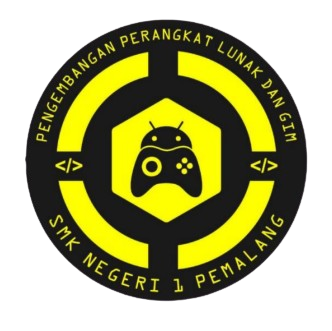

Solusi Teknologi & Jasa Komputer Terpercaya Melayani berbagai kebutuhan Anda mulai dari jasa pengetikan, print, penjilidan, servis PC/laptop, hingga instalasi freeware. Dikelola oleh siswa PPLG sebagai sarana belajar dan praktik kerja secara nyata dengan mengutamakan kualitas, ketelitian, dan pelayanan terbaik. Belajar dengan Praktik, Berkarya dengan Teknologi.
Teaching Factory (TEFA) PPLG merupakan unit layanan dan pembelajaran berbasis dunia kerja yang dikelola oleh Jurusan Pengembangan Perangkat Lunak dan Gim (PPLG). TEFA menjadi sarana bagi siswa untuk menerapkan pengetahuan dan keterampilan yang diperoleh selama pembelajaran ke dalam kegiatan kerja yang nyata, profesional, dan berorientasi pada kebutuhan pelanggan.